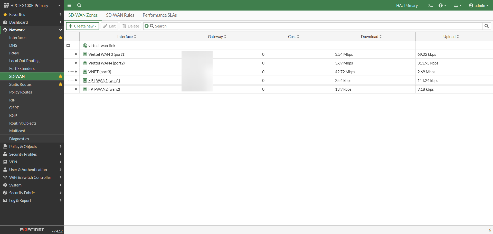
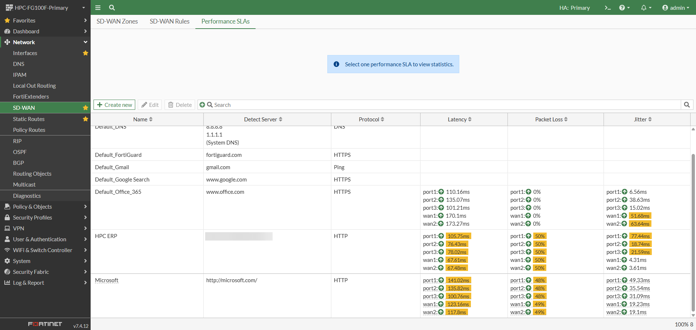
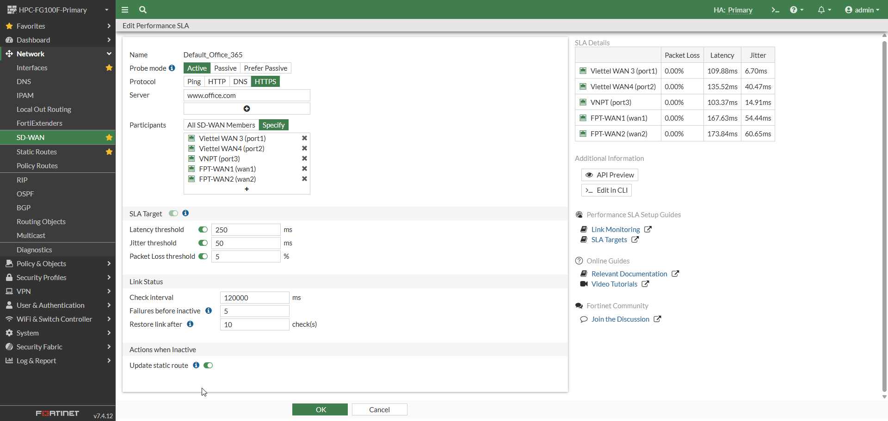
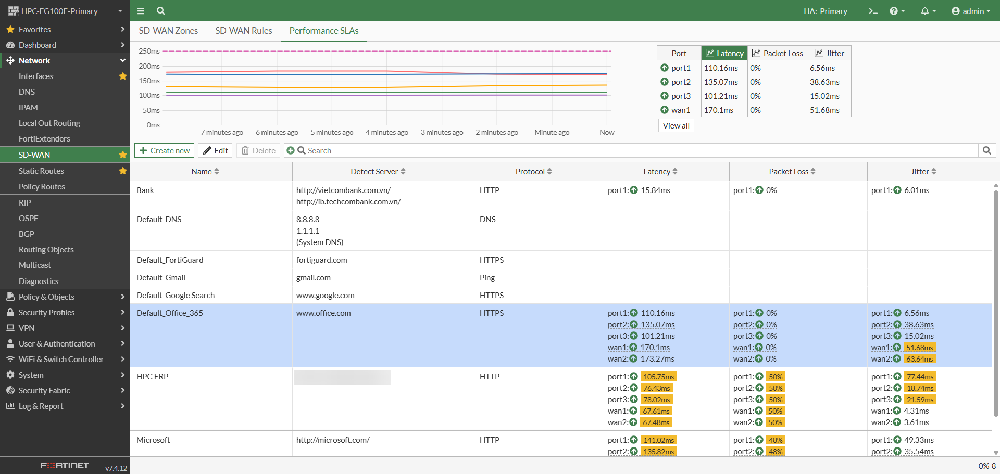
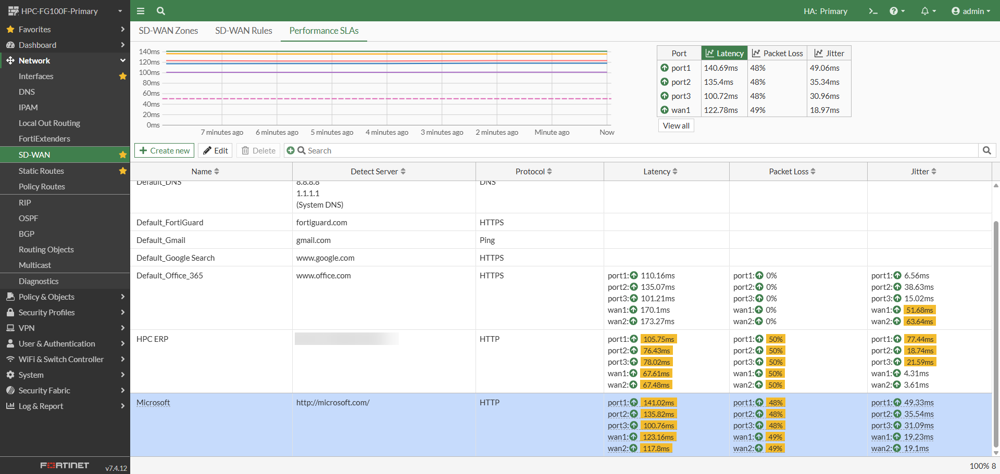
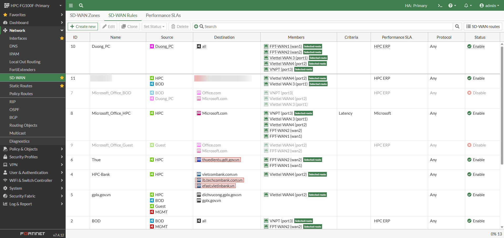
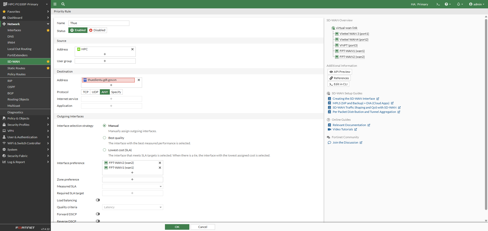
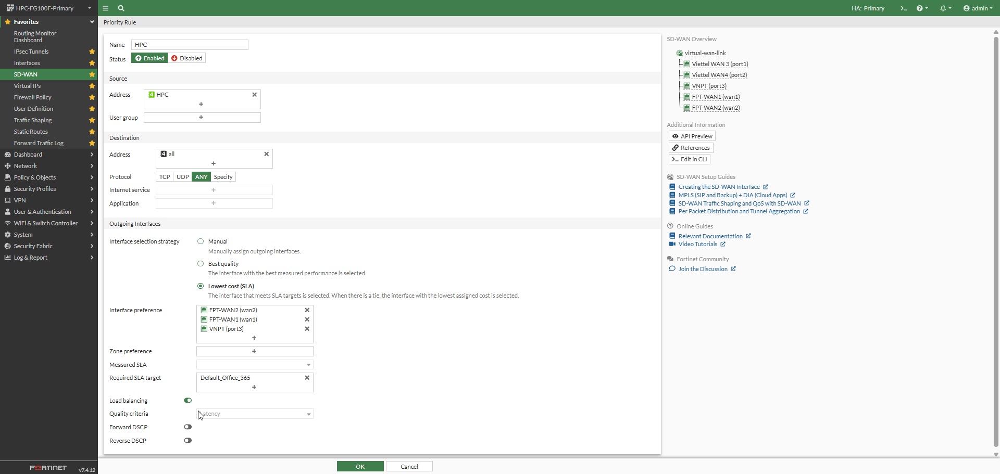
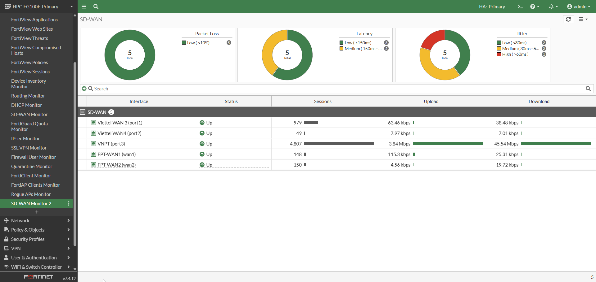

Mục 5.0 — Quy trình cấu hình
SD-WAN GUI trên FortiGate
Trước khi đi vào từng màn hình cấu hình minh họa, có thể hình dung quy trình cấu hình SD-WAN trên FortiGate theo các bước tổng quát sau:
virtual-wan-link). Khai báo interface thành viên, gateway, cost/priority và thông tin băng thông.Mục 5.1 — SD-WAN Zone
SD-WAN Zone và thành viên đường truyền

Hình trên minh họa màn hình SD-WAN Zones trên FortiGate. Trong mô hình SD-WAN, các đường truyền vật lý như ILL, FTTx hoặc Internet từ các ISP khác nhau sẽ được gom vào một SD-WAN zone logic, ví dụ virtual-wan-link. Đây là bước nền tảng để FortiGate có thể quản lý nhiều đường truyền như một nhóm tài nguyên WAN thống nhất.
-
SD-WAN zoneNhóm logic chứa các đường truyền WAN/Internet được sử dụng cho SD-WAN, ví dụ
virtual-wan-link. -
Interface thành viênCác port/wan interface tương ứng với từng đường truyền ISP, ví dụ
port1,port2,wan1,wan2. -
GatewayGateway của từng đường truyền, dùng để FortiGate định tuyến lưu lượng ra Internet hoặc về site khác.
-
Cost / PriorityTham số dùng để xác định mức ưu tiên hoặc chi phí logic của từng đường truyền trong quá trình chọn lựa khi điều hướng.
-
Upload / Download bandwidthThông tin băng thông hoặc lưu lượng thực tế trên từng interface, hỗ trợ theo dõi mức sử dụng đường truyền.
Mục 5.2 — Performance SLA
Performance SLA và kiểm tra chất lượng đường truyền

Performance SLA là cơ chế FortiGate sử dụng để đo chất lượng từng đường truyền theo các chỉ số như latency, jitter và packet loss. Đây là dữ liệu đầu vào quan trọng để SD-WAN quyết định chọn đường truyền phù hợp cho từng nhóm lưu lượng.
-
NameTên SLA, ví dụ
Default_Office_365,Microsoft,HPC ERP. -
Detect ServerMáy chủ hoặc dịch vụ dùng để kiểm tra chất lượng kết nối, ví dụ
www.office.com,microsoft.com, DNS server hoặc ứng dụng nội bộ. -
ProtocolGiao thức dùng để kiểm tra như Ping, HTTP, HTTPS hoặc DNS.
-
LatencyĐộ trễ của từng đường truyền tới detect server — chỉ số quan trọng với Microsoft 365, ERP và các ứng dụng realtime.
-
Packet LossTỷ lệ mất gói trên từng đường truyền — ảnh hưởng trực tiếp đến chất lượng kết nối và trải nghiệm người dùng.
-
JitterĐộ dao động độ trễ, đặc biệt quan trọng với thoại, video conference và các ứng dụng realtime.
Cấu hình chi tiết một Performance SLA

-
Probe modeChọn chế độ kiểm tra — Active hoặc Passive. Với Active, FortiGate chủ động gửi probe tới máy chủ đích theo chu kỳ.
-
Protocol & ServerChọn giao thức và khai báo máy chủ cần kiểm tra, ví dụ HTTPS với
www.office.com. -
ParticipantsChọn các interface/đường truyền tham gia đo SLA — có thể chọn tất cả thành viên SD-WAN hoặc chỉ một số WAN interface cụ thể.
-
SLA TargetThiết lập ngưỡng đánh giá: latency threshold, jitter threshold và packet loss threshold. Đường truyền không đạt ngưỡng sẽ bị đánh dấu không hợp lệ cho rule liên quan.
-
Check intervalTần suất kiểm tra chất lượng đường truyền — ảnh hưởng đến độ nhạy phát hiện suy giảm hoặc phục hồi đường truyền.
-
Failures before inactive / Restore link afterSố lần lỗi liên tiếp trước khi đánh dấu đường truyền không đạt SLA và số lần kiểm tra thành công trước khi khôi phục trạng thái.
-
Update static routeCho phép FortiGate cập nhật trạng thái route theo kết quả SLA, hỗ trợ failover ở tầng routing nếu cần.
Kết quả đo SLA thực tế

Default_Office_365 — so sánh latency, packet loss, jitter giữa các đường truyềnFortiGate hiển thị latency, packet loss và jitter theo từng port/đường truyền. Người vận hành có thể nhìn nhanh đường truyền nào đang có chất lượng tốt hơn để phục vụ điều hướng lưu lượng Microsoft 365.
-
Đường truyền nào có latency thấp hơnƯu tiên cho Microsoft 365, ERP hoặc ứng dụng nhạy cảm với độ trễ.
-
Đường truyền nào có packet loss bằng 0 hoặc thấp hơnĐảm bảo tính liên tục và chất lượng kết nối — đặc biệt quan trọng với voice/video conference.
-
Đường truyền nào có jitter thấp và ổn định hơnQuan trọng với các ứng dụng realtime; jitter cao có thể gây ngắt âm thanh, giật hình.
-
Trạng thái từng member có còn đạt SLA target hay khôngXác định đường truyền có hợp lệ để SD-WAN rule tiếp tục sử dụng hay đã chuyển sang đường dự phòng.

http://microsoft.com/ — các giá trị màu vàng thể hiện chỉ số cần chú ýMục 5.3 — SD-WAN Rules
Steering traffic theo ứng dụng, dịch vụ hoặc địa chỉ đích

SD-WAN rule dùng để xác định lưu lượng nào sẽ đi qua đường truyền nào, dựa trên source, destination, application, Internet service, protocol, performance SLA và trạng thái đường truyền.
-
NameTên rule, ví dụ rule cho Microsoft 365, ERP, banking, thuế hoặc lưu lượng người dùng chung.
-
SourceĐối tượng nguồn — có thể là VLAN, subnet, user group hoặc nhóm thiết bị tại site.
-
DestinationĐích truy cập — có thể là
all, domain, address object, Internet service hoặc ứng dụng cụ thể. -
MembersCác đường truyền được phép sử dụng trong rule, ví dụ chỉ ILL, chỉ FTTx, hoặc cả hai.
-
CriteriaTiêu chí chọn đường truyền — ví dụ latency, jitter, packet loss hoặc SLA target.
-
Performance SLASLA được gắn với rule để FortiGate đánh giá đường truyền đạt/không đạt trước khi sử dụng.
-
ProtocolGiao thức áp dụng cho rule — Any, TCP, UDP hoặc dịch vụ cụ thể.
-
StatusTrạng thái rule đang bật hoặc tắt — hỗ trợ bật/tắt linh hoạt mà không cần xóa rule.
Mục 5.4 — Failover & Load Balancing
Failover và load balancing giữa các đường truyền
Cấu hình ưu tiên / Failover

Hình trên minh họa một rule SD-WAN theo hướng ưu tiên/failover. FortiGate cho phép chỉ định danh sách interface theo thứ tự ưu tiên, ví dụ FPT-WAN2 trước, sau đó FPT-WAN1.
-
Interface selection strategyChọn cách FortiGate quyết định đường truyền — Manual/Priority cho failover, hoặc Lowest cost (SLA) cho load balancing.
-
Manual / Interface preferenceKhai báo thứ tự ưu tiên các đường truyền — đường đứng đầu danh sách sẽ được dùng trước khi đạt SLA.
-
Measured SLA / Required SLA targetGắn SLA để FortiGate chỉ sử dụng đường truyền khi đạt tiêu chí chất lượng đã thiết lập.
-
Load balancingTắt nếu muốn dùng mô hình active/backup thay vì chia tải — phù hợp với traffic quan trọng cần độ ổn định cao.
Cấu hình Load Balancing

Hình trên minh họa một rule SD-WAN sử dụng tiêu chí Lowest cost (SLA) và bật Load balancing. FortiGate sẽ chọn interface đáp ứng SLA target, sau đó ưu tiên đường truyền có cost thấp hơn hoặc phân bổ lưu lượng theo chính sách cân bằng tải.
-
Interface selection strategyChọn
Lowest cost (SLA)hoặc chiến lược phù hợp với yêu cầu phân bổ tải. -
Interface preferenceDanh sách các đường truyền được phép sử dụng — FortiGate sẽ phân bổ traffic trong nhóm này.
-
Required SLA targetSLA bắt buộc, ví dụ
Default_Office_365— chỉ các đường truyền đạt SLA mới được đưa vào load balancing. -
Load balancingBật để phân bổ lưu lượng qua nhiều đường truyền đồng thời, tận dụng tối đa băng thông tổng hợp.
-
Quality criteriaTiêu chí chất lượng như latency, jitter hoặc packet loss — dùng để đánh giá đường truyền trước khi đưa vào pool.
-
Forward DSCP / Reverse DSCPTùy chọn đánh dấu QoS nếu cần ưu tiên traffic ở các lớp mạng khác trong topology.
Mục 5.5 — Security Policy
Kết hợp SD-WAN với Security Policy trên FortiGate
Trong FortiGate, SD-WAN rule quyết định đường đi của lưu lượng, còn firewall policy và security profile quyết định lưu lượng đó có được phép đi qua hay không, đồng thời áp dụng các lớp kiểm soát bảo mật cần thiết. Hai thành phần này hoạt động song song và bổ trợ nhau.
-
Firewall policyCho phép hoặc chặn lưu lượng từ LAN/VLAN ra SD-WAN zone, Internet hoặc VPN — đây là lớp kiểm soát truy cập cơ bản nhất.
-
Source / DestinationKhai báo subnet, VLAN, user group hoặc dịch vụ đích áp dụng cho policy.
-
Service / ProtocolXác định loại traffic được phép, ví dụ HTTP/HTTPS, DNS, hoặc custom service cho ứng dụng nội bộ.
-
NATBật NAT cho lưu lượng Internet breakout tại từng site — cần thiết để người dùng truy cập Internet trực tiếp qua đường truyền local.
-
Security profilesÁp dụng IPS, Web Filtering, Application Control, Antivirus hoặc SSL Inspection tùy theo phạm vi dịch vụ và yêu cầu bảo mật của khách hàng.
-
LoggingBật ghi log để phục vụ monitor, báo cáo và điều tra sự cố qua FortiAnalyzer nếu được triển khai.
Mục 5.6 — Monitor & Giám sát
Giám sát SD-WAN và chất lượng đường truyền

Màn hình SD-WAN Monitor trên FortiGate là giao diện giúp đội vận hành theo dõi tổng quan tình trạng các đường truyền SD-WAN. Đây là công cụ trực tiếp trên từng thiết bị FortiGate, cho phép kiểm tra nhanh trạng thái link, SLA, failover và lưu lượng tại site.
-
Packet LossTỷ lệ mất gói của các đường truyền — chỉ số đầu tiên cần kiểm tra khi phát hiện kết nối bất thường.
-
LatencyĐộ trễ của từng đường truyền — cho biết đường truyền nào đang có chất lượng tốt hơn ở thời điểm hiện tại.
-
JitterĐộ dao động độ trễ — đặc biệt quan trọng với voice/video; jitter cao có thể gây giật, ngắt tín hiệu.
-
Interface statusTrạng thái từng đường truyền đang Up/Down — phát hiện nhanh link nào đã mất kết nối.
-
SessionsSố lượng phiên kết nối đang đi qua từng interface — giúp đánh giá phân bổ tải thực tế giữa các đường truyền.
-
Upload / DownloadLưu lượng upload/download trên từng đường truyền — theo dõi mức sử dụng băng thông theo thời gian thực.